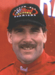
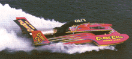

|
 |
As announced after the 1996 racing season, Dave Villwock will take over as
driver and team manager for a perennial crowd favorite, the U-12 Miss Budweiser.
Dave Villwock is the defending Gold Cup champion having won the title in
1996 racing the Detroit-sponsored PICO American Dream.
Dave is driving for owner Bernie Little. Bernie's is the longest standing owner/sponsor combination in all of motorsports, now in it's 34th year. (Click here for full story) |
| Interestingly, Mark Evans, who filled in as driver of the Miss Bud for most of 1996 (replacing the injured/retired Chip Hanauer) will trade with Dave Villwock for the 1997 seat in the U-1 PICO boat. |
| This owner and driver duo return to Detroit with new improvements and will sport a bold new "Close Call Calling Card" paint job. For 1997, Frontier Communications and Catalyst Communications have made a large commitment to motorsports racing by sponsoring a wide variety of classes including this Unlimited Hydroplane team, a NASCAR team, and more, all displaying the Close Call signature. |
|
 |
| After winning the Gold Cup in 1991 (as the Winston Eagle) & 1994 (as the Smokin' Joe's), this team was visibly dejected while they sat out the final day of racing [1996] due to damages suffered as the victim in the Saturday collision with the Miss Bud. The cockpit was damaged more than overnight repairs would allow, but fortunately Mark Tate escaped without injury. This is a strong team and we all expect them to be there in the final for 1997. |
|
The U-3 Cooper Express is also a favorite among the fans because it is the only remaining
boat using the World War II piston engines (an Allison V12). Word is that they
are working on a BRAND-NEW hull, and adding a supercharger to the engine
for 1997! Expect them to continue setting new piston-powered speed records,
and perhaps even take a real run at the turbine powered teams, while they
shake the shores with open headers. :)
This boat is owned and operated by the team of Ed Cooper Sr. & son, and this year they'll have Rick Christensen in the driver seat. In 1996, this boat ran as "Miss Roostertail" in Detroit. On the West coast, she carries the "Lake Chelan - Mill Bay Casinos" banner. |
| Steve David will continue at the helm of the U-2 Harvey Motorsports 'three-pointer', appearing in Detroit as the Miss Detroit Ford Dealers. He is one of the more personable drivers in the sport of Unlimited Hydroplane racing, and is one of only six active drivers with career event victories. Steve is also president of the APBA, the nation's largest organization for powerboating. |
| Steve Woomer, Competition Specialties mogul and owner of the Close Call-sponsored U-10, has announced that his second entry on this year's UHRA Thunder Tour '97 will be known as Miss TruckGear. Nate Brown had been announced as driver, crew chief and team manager when the project was revealed over the winter. The boat, according to Woomer, will be resplendent with a purple, orange and silver color scheme. It has been assigned the U-4 designation and will travel the entire Thunder Tour circuit, beginning with the Virginia Is For Lovers Cup in Norfolk Memorial Day weekend. |
| For info on all the teams competing this season, see the UHRA Fleet page. |
 Return to the Top Results page.
Return to the Top Results page.
All contents Copyright © 1996 Spirit of Detroit THUNDERFEST, except where noted.
Web page created by Brian Reed.
 Return to the Top THUNDERFEST page.
Return to the Top THUNDERFEST page.
All Rights Reserved.